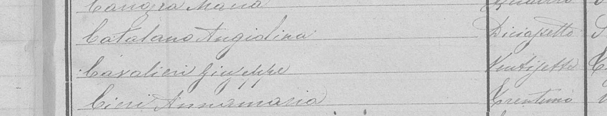
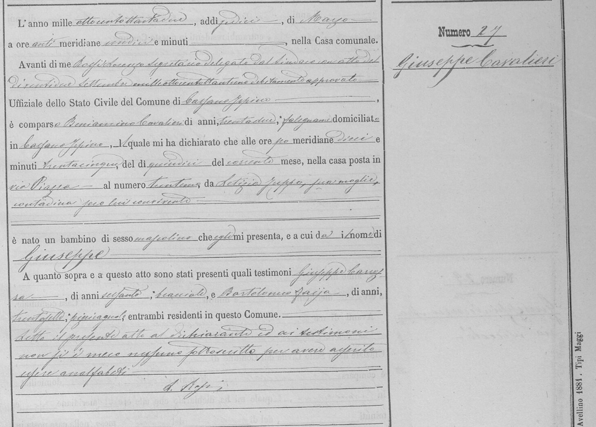

Antenati includes a name search, but much of the site is best used as a digital archive. The original civil registers can be browsed by place, year and record type, and many volumes have their own handwritten indexes even when the names have never been added to the website search.
The example in this guide
Following Giuseppe “Joseph” Cavaliere back to Italy
For this walkthrough, I am looking for the Italian birth record of Giuseppe Cavaliere, who later used the name Joseph in the United States. I already know enough from later records to give Antenati the most useful clues: his Italian name, an exact or approximate date, and — most importantly — his comune of birth.
Giuseppe's move from Italy to New York is also an example of US and transatlantic genealogy research: American records identify the immigrant, while the Italian register provides the original name, place and civil record needed to continue the family line.
How Antenati works
Antenati is Italy's national portal for digitised historical records held by the State Archives. For family historians, its civil registration collections are especially valuable. Depending on the place and period, you may find births, marriages, deaths, marriage publications and attachments, indexes and other civil-status material. State Archive pages can also point towards other genealogical collections.
The most important thing to understand is that Antenati is organised primarily around archives, places and registers. Some names have been indexed and can be searched directly, but many surviving pages are available only as images. If a record has not been indexed, a name search will not magically find the writing on the page.
That is why knowing the Italian comune — the town or municipality where the event was registered — can be more useful than knowing an exact name spelling.
Try the name search first
I still begin with Search by Name. If the ancestor has been indexed, this can save a great deal of time. However, I often start by entering only the surname rather than the full name. This keeps the initial search broad and avoids accidentally excluding the correct record because a given name is different from the one you expect.
Giuseppe is a perfect example. In American records he could appear as Joseph Cavaliere, while his Italian birth record uses Giuseppe Cavaliere. A search for “Joseph Cavaliere” may therefore miss the Italian record entirely. Searching simply for Cavaliere gives me a better chance of seeing Giuseppe among the results, after which I can use the name, place and year filters to narrow the list.
This is particularly useful with Italian ancestors who had several given names, used a middle name in everyday life, anglicised their name after migration, or whose name has been indexed differently from the original handwriting. If a surname-only search gives you too many results, narrow them with the filters rather than making the first search unnecessarily restrictive.
If the name search misses the record, browse the registers
The next route is Search the Registers. Instead of asking Antenati to find Giuseppe by name, I ask it to show me the right body of records.
For Giuseppe I already know three pieces of information:
- Località: Cassano Irpino
- Anno: 1882
- Tipologia: Nati
Nati means births. The other common categories include Matrimoni for marriages and Morti for deaths. You may also see more specialised descriptions such as pubblicazioni, allegati or multi-year indexes.
Check what the archive has digitised
Antenati tells you where the register sits within the archival collection. These details matter because they let you record exactly what you searched and return to the same source later.
You can browse the Cassano Irpino birth-register series on Antenati. If you are keeping a research log, I recommend recording the archive, collection, town, year, typology and archival reference rather than writing only “found on Antenati”.
Look for the index inside the register
Opening a register may give you hundreds of images. Before reading from page one to the end, check the beginning and the end of the volume for an annual or alphabetical index. These handwritten indexes were created as part of the original record-keeping system and can point you directly to an act number.
The arrangement varies. Some are alphabetical by surname, some by given name, and some are only approximately alphabetical. Work out how that particular volume is organised before assuming someone is missing.

From the index to Giuseppe's original birth record
The register leads to Act No. 27, headed Giuseppe Cavaliere. This is where the original image becomes much more valuable than a simple search result.

Read the dates carefully
This particular entry is a useful reminder that the date at the top of an Italian civil record is not always the date of the event itself. Giuseppe's act was drawn up on 16 March 1882, while the body of the record states that the child was born on 15 March 1882.
If I copied only the first date I saw, I could accidentally record Giuseppe's registration date as his birth date. Always read the sentence describing when the birth, marriage or death actually occurred.
Read the whole act
The original record also names Bernardino Cavaliere as the person making the declaration and places the event in Cassano Irpino. The surrounding text and witness section are exactly why I prefer the original image whenever it survives.
Italian civil records can contain valuable details about parents, spouses, ages, occupations, residences, house addresses and witnesses. Not every record contains every detail, and handwriting can be difficult, but those extra lines may be what connects one generation to the next.
It is also worth checking the images immediately before and after the entry. Marginal notes, continuations, attachments or later annotations can sometimes appear elsewhere in a register.
Useful Italian terms on Antenati
When the year you need has not been digitised
Before assuming a record has been destroyed, look at the years Antenati actually makes available for that comune and record type. Coverage varies considerably between places and periods. A missing year may mean that the State Archive does not hold that series, that it has not yet been digitised or published, or that there is a genuine gap in the surviving registers.
Check the relevant State Archive information and consider the comune itself if the required civil register is not available online. You can also approach the problem sideways: a sibling's birth, a parent's death or a marriage record may provide the names and places needed to continue the line.
Keep notes as you browse
When a register does not contain the person you expected, that negative search can still be useful — but only if you record it. Note the town, year, record type, archive, register reference and pages or index ranges checked. This prevents you from repeating the same work months later and makes it easier to see where the next search should go.
Focused Antenati support
Need help locating or understanding one Italian civil record?
A tightly defined Antenati search may fit the Quick Search when you can provide the ancestor’s name, the comune, an approximate year and the record type. The search can focus on identifying the correct register, checking its index, locating the original act and explaining the key details or next step.
If the comune is unknown, the relevant year is not online or you want to extend several generations, I will explain why a broader research stage may be more appropriate before work begins.